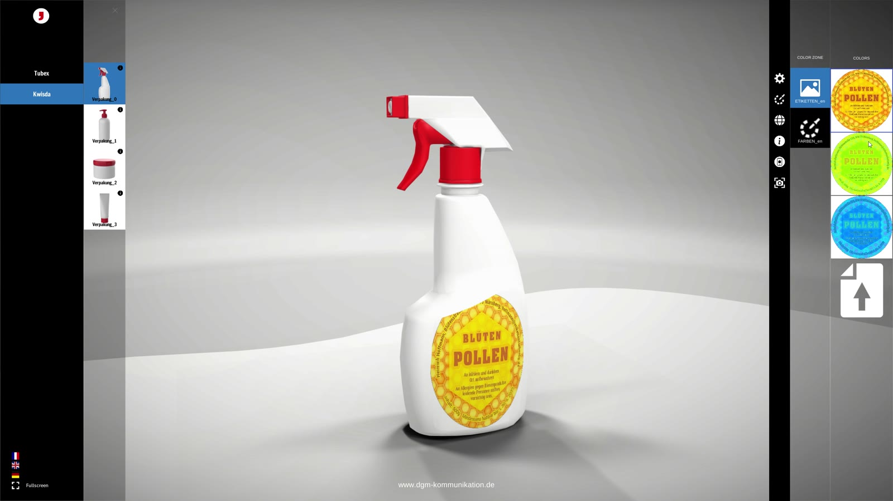
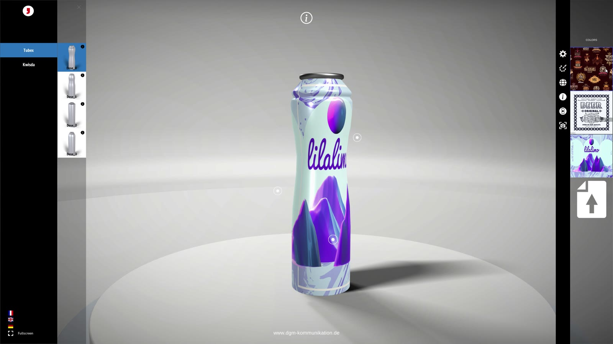
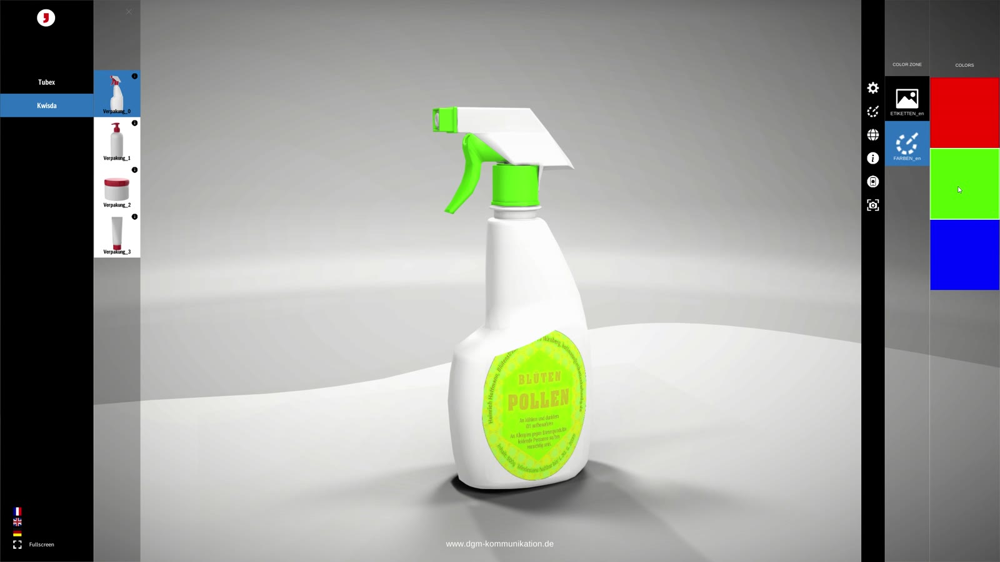

Interactive · WebGL configurator
Product
Configurator
A browser-based 3D configurator that replaced a tablet app handed out on USB sticks, and cut the time to add a new product model from about a week to ten minutes.
Screen recording of the demo version. The original client product is under NDA, so the same engine is shown here with packaging models.
01 · Overview
A sales configurator that runs from a link
The client, a manufacturer of heavy vehicles, used a 3D configurator in its showrooms so sales staff could show customers every body, chassis and equipment option. I built a completely new application in Unity WebGL, without reusing any code from the old one. It opens in the browser and loads 3D models from the server on demand.
I built the whole project on my own, from the architecture and code to the shaders, the 3D preparation and the interface.
02 · Challenge
Slow to distribute, slow to extend
The previous app had two problems that grew with every new product.
- It had to be installed on tablets from USB sticks handed out to the showrooms, so every update meant a new round of sticks.
- Each new 3D model went to an external vendor, and integrating it into the app took close to a week.
- The replacement had to run in a browser with heavy, detailed models and work in several languages.
03 · What I did
My contribution
- Built a new configurator from scratch as a Unity WebGL app, hosted on the agency's server and opened by a link, with no installation.
- Built on-demand loading: every model, part and environment is a separate AssetBundle on the server and is downloaded only when the user selects it. The app itself stays light, while the catalogue grew to around 60 bundles.
- Designed a data-driven scene structure: each configurable object in the Unity hierarchy gets a component and the name of its AssetBundle, so a new model is added without writing code.
- Wrote the configuration logic with two kinds of options: add-ons that switch on and off independently (such as an extra headlight) and either-or variants that replace a whole part (such as a different chassis). Only options that fit the current selection are shown.
- Implemented recolouring by paint zones and material swapping: beyond colour, whole materials can be replaced, such as the labels in the packaging demo.
- Wrote a custom hotspot shader that looks solid in front of the model and turns pale when the hotspot is behind it.
- Added studio, day and night environments, an orbit camera and fullscreen mode.
- For the packaging version, added uploading your own label from the computer and saving screenshots of the configured product straight to the computer.
- Localised the interface into German, English and French from JSON files, and added deep links: URL parameters open a specific model, colour, language and environment.
- Prepared the 3D models and environments for real-time rendering in the browser.



04 · Process
From a week to ten minutes
The key decision was to separate the application from its content. The WebGL app only knows the structure of the catalogue. The heavy models live on the server as AssetBundles and are referenced by name from the Unity scene.
The loader behind it is short. Every configurable part knows only the name of its bundle, and the same coroutine downloads, instantiates and swaps it in:
// Downloads one configurable part (cab, chassis, add-on) only when the user picks it
public IEnumerator DownloadVariant(Input_Variant_Base variant)
{
Ui_Block(); // show the loader and lock input while downloading
string url = baseUrl + variant.AssetbundleName + ".assetbundle";
UnityWebRequest request = UnityWebRequestAssetBundle.GetAssetBundle(url);
yield return request.SendWebRequest();
if (request.result == UnityWebRequest.Result.Success)
{
AssetBundle bundle = DownloadHandlerAssetBundle.GetContent(request);
string rootAsset = bundle.GetAllAssetNames()[0];
variant.ModelInScene = Instantiate(bundle.LoadAsset<GameObject>(rootAsset));
variant.ModelInScene.SetActive(false); // revealed once the old part is gone
bundle.Unload(false);
}
else Debug.LogWarning(request.error);
Ui_Unblock();
}
// Swapping a part: load the new one first, then replace, so the model never disappears
public IEnumerator SwapVariant(Input_Variant_Base oldVariant, Input_Variant_Base newVariant)
{
yield return StartCoroutine(loader.DownloadVariant(newVariant));
Destroy(oldVariant.ModelInScene);
newVariant.ModelInScene.SetActive(true);
}To check it on the real thing, I ran the packaging build and recorded its network requests while clicking through products. Every product is split into two bundles, the body and the label, and each click downloads only those two:
With a finished 3D model, adding it to the configurator now means building its AssetBundle, uploading it and assigning the bundle name to an object in the scene. That takes about ten minutes and happens in-house instead of at an external vendor.
I also built a version on the Universal Render Pipeline with noticeably better visuals. Because of compatibility issues on the client side, the truck configurator stayed on the built-in pipeline; the packaging demo shown here runs on URP.
05 · Result
The outcome
The configurator opens from a link in the browser: no installation and no USB sticks. New models are added in about ten minutes instead of a week, and the same engine was reused for other product lines, such as the packaging demo shown on this page.